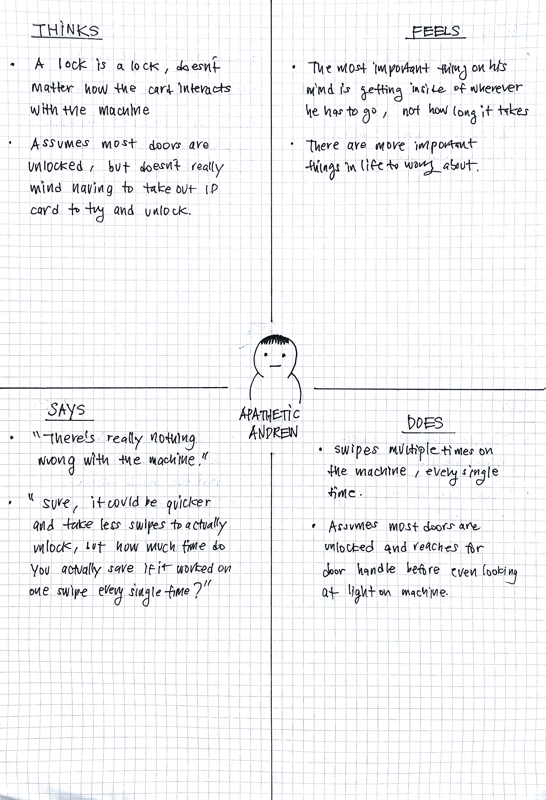
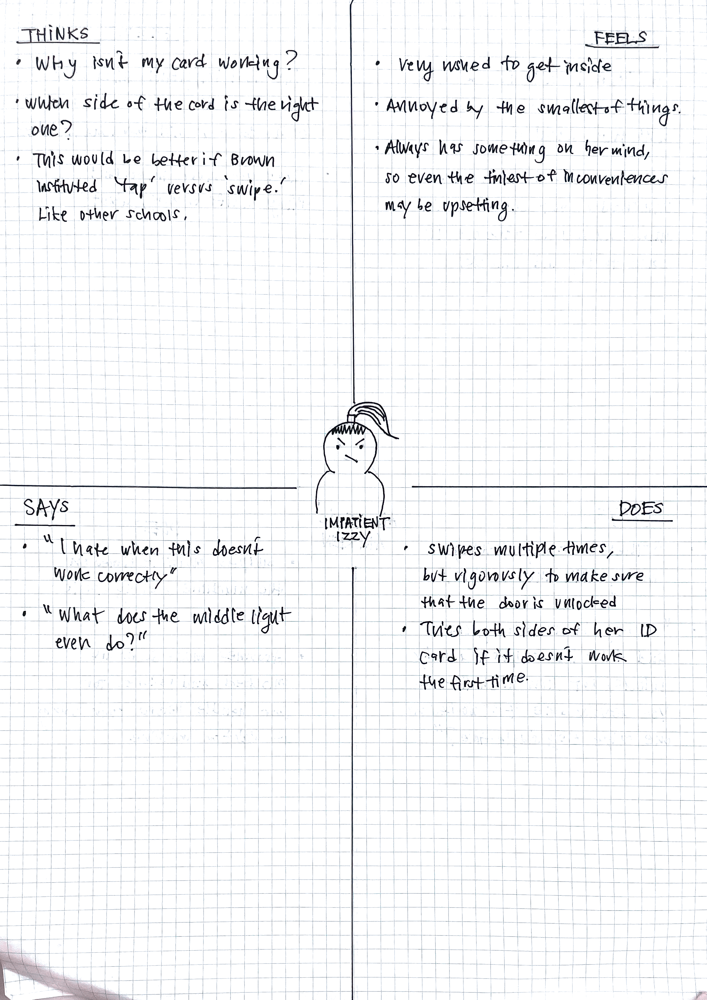

Brown University Card Swipe Access Machine
A look at interactions with everyday UI around Brown University
User interface (UI) can be found examined even through some of the simplest objects around us. The goal was to focus on a particular example of UI around campus at Brown University, and practice observing & capturing everyday user interactions and their journey.
The Interface

- The standard card swipe access machine found all over the public buildings at Brown University, including but not limited to, dorms, libraries, and research buildings.
- The hardware of the machine is simple, with a thin gap on the right side of the machine affording the operation of swiping one's card. Three lights (red, yellow, and green respectively) run vertically along the gap, each color signifying (but to a limited extent) one's access to the building. Each of the three colors light up (though the middle light is rarely ever on) to indicate different levels of access: green indicates the card has swiped successfully, whereas the red indicates that access is not permitted.
Observations and User Input on Interactions
Key Observations
- Though the majority of buildings have the machine positioned on the exterior of the building, which may signal the need for swipe access, for public buildings (i.e. libraries and campus buildings) many would ignore the machine and reach for the door first.
- Swiping is a very straightforward process for the majority of users, with most taking only one swipe for most.
- A good number of users swipe the card up and down multiple times until the light turns green or they hear an audible click from the door being unlocked.
- When the light turns red upon swiping, sometimes users will flip their card over on the other side and try once more.
- In the unusual (but not uncommon) case where both the red and green lights are on simultaneously, many users will proceed to swipe their cards.
Key Questions
- Step-by-step, how would you describe the typical process of using the swipe access machine?
- How would you describe your ideal experience of using the swipe access machine?
- If you were giving instructions to someone who has never used this machine, how confident would you feel about explaining the process?
- What is one aspect of your experience with the swipe access machine that you wish were different?
User Responses
- Almost all of the users described the experience and overall process as very intuitive, with the majority stating that the experience consists of simply taking out one's card, swiping multiple times in a vertical fashion in order to make sure that the door unlocks, signaled either by the visual flashing green light or the audible cue of the door unlocking.
- Users described the ideal experience to consist of no hesitation on which side of the ID card would work, and needing only a single swipe to unlock the door to expedite the process.
- Interestingly, despite most agreeing that the overall experience was easy, many expressed various difficulties with the interface. Some complained about how each individual machine took more vigorous swipes than others in order to fully unlock, attributing this inconsistency to different levels of wear and tear. Others expressed lingering confusion in addition to frustration, despite a lot of experience with the machine, with which side of the ID card to swipe. Some expressed more clarity on this issue, rather than having to waste extra seconds on trial-and-error.
- Further, many expressed confusion and wanted more clarity on what each of the lights/combination of lights signified. For instance, many users did not know what the middle (yellow) light represented, given that it was rarely on. Similarly, users weren't sure about what it meant when both the red and green lights were on simultaneously, and many expressed that just to be safe they take the extra step to swipe anyway in case the door is locked.
Personas


Apathetic Andrew:
- Apathetic Andrew is a full-time student at Brown University, who doesn't think too deeply about the card swipe access machine.
- He still, however, runs into minor inconveniences, such as the need to swipe multiple times on the machine in order to make sure that the door fully unlocks. Like most busy students, Andrew doesn't think too much about the workings of the machine, and would prefer that the machine works with a single swipe, but doesn't care too much that he has to spend the extra seconds swiping repeatedly.
- Andrew represents the majority of students at Brown, who understand the workings of the swipe access machine intuitively, and don't think too much about how it could be improved. Again, he does experience challenges at times with the machine, such as the need to constantly swipe more than once to confirm the door is unlocked, but this has become a habit at this point and doesn't believe that there is a dire need for improvements.
Impatient Izzy
- Impatient Izzy is also a full-time student at Brown University, though unlike Apathetic Andrew, finds even the smallest of inconveniences regarding the swipe access machine to be a nuisance.
- Izzy feels a dire need to go from place-to-place, especially when it comes to getting inside her dorm once she returns home from a late night at the library. She finds the ever-so-often need to flip the ID card over an unnecessary action, and finds herself comparing Brown's swipe access system with that of other schools, which employ 'tap-to-enter' technology.
- I feel that Izzy represents not necessarily any one of the users I've interviewed as a whole, but rather the small parts within each of them that find the swipe access machine a little inconvenient. At times, busy college students can be in a rush to get from location to location, and at times, issues with the swipe access machine (such as that moment of hesitation when it's unclear whether doors are unlocked because both red and green lights are on at the same time) can feel very inconvenient.